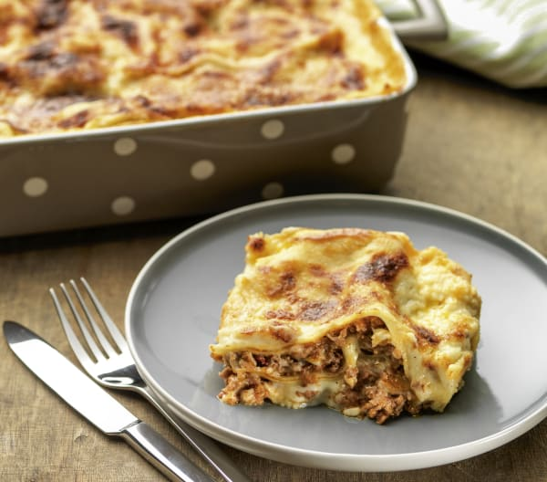
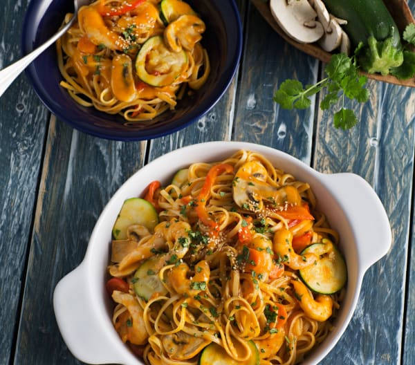
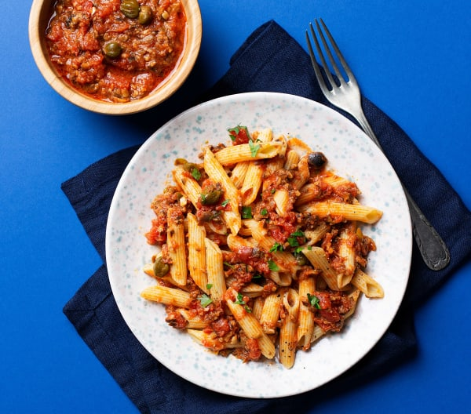

Sofría la papada de cerdo con el aceite durante unos 6 min. Retire a la fuente donde vaya a
servir los espaguetis y reserve.
Ponga en un bol el huevo, las yemas, el queso rallado, ½ cucharadita de sal y la pimienta y
mezcle bien.
Mientras tanto, ponga a hervir una olla con abundante agua y 1 cucharadita de sal y cueza los
espaguetis el tiempo indicado en el paquete o hasta que estén al dente. Escurra la pasta
(reserve 3-4 cucharadas del agua de cocción), añádala a la fuente con la papada reservada y
mezcle.
Incorpore enseguida la mezcla del bol, mezcle bien y sirva inmediatamente.
Dificultad: avanzado
Tiempo de preparación: 40min
Tiempo total: 2h 30min
Raciones: 6 raciones
Lasaña boloñesa
Ingredientes
100 - 200 g de queso parmesano
Salsa boloñesa
200 g de verduras variadas (apio en rama, zanahorias y cebolla)
40 g de aceite de oliva virgen extra
800 g de carne picada mixta (mitad cerdo mitad ternera)
100 g de vino blanco seco
300 g de tomate triturado
1 - 1 ½ cucharadita de sal (ajuste al gusto)
½ - 1 cucharadita de pimienta negra molida (ajuste a su gusto)
Bechamel
1000 g de leche
80 g de mantequilla blanda
100 g de harina
1 cucharadita de sal
1 - 2 pellizcos de nuez moscada molida
Montaje de la lasaña
18 - 20 placas de lasaña secas (10 cm x 20 cm)
Mantequilla para engrasar la fuente y gratinar

Preparación
Ralle el queso. Vierta en un bol y reserve.
Salsa boloñesa
Trocee las verduras y sofría con el aceite 5 min.
Añada la carne picada mixta, remueva para evitar que se forme un bloque y rehogue 8 min.
Agregue el vino y continúe 5 min.
Añada el tomate triturado, la sal y la pimienta. Cocine 20 min a fuego medio. Vierta en un bol
y reserve.
Bechamel
Ponga en una sartén la leche, la mantequilla, la harina, la sal y la nuez moscada y cocine a
fuego bajo hasta obtener la espesura deseada.
Montaje de la lasaña
Precaliente el horno a 180°C. Engrase ligeramente una fuente de horno y reserve.
Cubra el fondo de la fuente con una capa fina de salsa boloñesa. Ponga una capa de placas de
lasaña secas encima de la salsa, cubra con otra capa de salsa boloñesa, espolvoree con parmesano
rallado y cubra con una capa de bechamel. Repita el proceso hasta que haya usado todos los
ingredientes. Termine con una capa de bechamel, espolvoree con parmesano y reparta trocitos
pequeños de mantequilla por encima.
Hornee durante 30-40 minutos (180°C). Deje reposar la lasaña 15-20 minutos antes de cortarla en
porciones cuadradas y servirla aún caliente.
Dificultad: fácil
Tiempo de preparación: 15min
Tiempo total: 30min
Raciones: 6 raciones
Tallarines con verduras y langostinos al curry
Ingredientes
150 g de cebolla
2 - 3 dientes de ajo
40 g de aceite de oliva
1 lata de tomate troceado en conserva (400 g)
2 cucharadas de azúcar moreno
1 cucharadita colmada de sal
2 - 3 pellizcos de pimienta molida
2 cucharadas de curry en polvo
¼ de cucharadita de colorante amarillo
1 lata de leche de coco (400 g)
100 g de calabacín
100 g de zanahoria
100 g de pimiento rojo
100 g de champiñones frescos laminados
200 g de langostinos crudos grandes pelados (salpimentados)
400 g de tallarines
agua para la olla
1 cucharada de cilantro fresco picado
1 cucharadita de semillas de sésamo

Preparación
Trocee la cebolla y el ajo. Añada el tomate troceado y sofría 5 min.
Incorpore el azúcar, la sal, la pimienta, el curry, el colorante y la leche de coco. Mezcle y
reserve.
Trocee a su gusto las verduras y sofría junto con los champiñones.
Cocine al vapor los langostinos.
Mientras tanto, cueza la pasta en una olla con abundante agua hirviendo con sal.
Escurra la pasta, póngala en una fuente y añada las verduras y los langostinos. Vierta encima la
salsa reservada y mezcle bien. Espolvoree con el cilantro y las semillas de sésamo y
sirva.
Dificultad: fácil
Tiempo de preparación: 10min
Tiempo total: 20min
Raciones: 4 raciones
Penne alla puttanesca
Ingredientes
8 - 10 ramitas de perejil fresco (solo las hojas, limpias y secas)
1 diente de ajo
130 g de aceitunas negras sin hueso
30 g de anchoas en aceite escurridas
30 g de aceite de oliva virgen extra
500 g de tomate troceado
20 g de alcaparras escurridas
3 pellizcos de sal
360 g de macarrones estriados penne rigate
o bien 360 g de macarrones
1 pellizco de pimienta negra molida

Preparación
Pique el perejil. Retire a un bol y reserve.
Trocee el ajo y sofría junto con las aceitunas, las anchoas y el aceite 3 min.
Añada el tomate, las alcaparras y 1 pellizco de sal. Siga 12 min.
Mientras tanto, cueza los macarrones en abundante agua hirviendo con 2 pellizcos de sal.
Cuele los macarrones y póngalos en una fuente. Vierta encima la salsa, espolvoree con la
pimienta y el perejil y sirva.